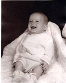
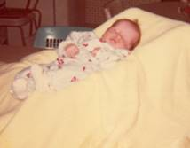

Chapter 21 – DAVID GLEN BROWNING

On September of 1970, the Lord blessed us with another beautiful baby son whom we named David. When this son was born, I told Ken I didn't care if his mom didn't like the name of David, we did and he was our child and we could name him what we wanted - so we named him David Glen. Glen after my father. Ken's mom never said anything about his name.
My concerns about having two children so close, especially since Shellie & Mike were only two years apart, quickly ended when David was born. David didn't have colic and was a contented baby, and Mike was so cute with David and always wanted to help. He was a big help. I let him get me the diapers, binkee, help feed him when I bottle fed him or gave him water in the bottle, etc. He always wanted to hold him, etc., and as soon as David was old enough to play, they were having fun together. David, although a contended baby, was a sickly baby. He was always getting colds which would turn into tonsillitis, croup, ear infections, etc.